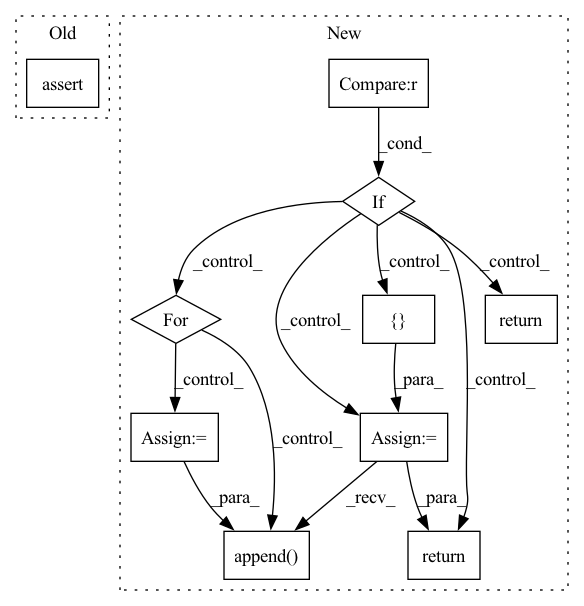

Pattern ID :5934
Before Change
loss: `torch.autograd.Variable`
:math:`-\mathrm{logpreds} \cdot \mathrm{targets}`
assert logpreds.size() == targets.size()
result = -logpreds * targets
// Sum across dims if axis given or more than 1 dim
if dims is not None:After Change
loss: `torch.autograd.Variable`
if log_preds.size() == targets.size() :
return log_categorical_crossentropy_1_hot(log_preds, targets)
n_classes = log_preds.size()[1]
n_elements = 0
losses = []
for i_class in range(n_classes):
mask = targets == i_class
mask = mask.type_as(log_preds)
n_elements -= th.sum(mask)
losses.append( th.sum(mask * log_preds[:,i_class]))
return th.sum(th.stack(losses)) / n_elements
def l2_loss(model):In pattern: SUPERPATTERN
Frequency: 3
Non-data size: 10
Instances Fragment ID: 20852444
Project Name: braindecode/braindecode
Commit Name: a294170aab00bfa17778ad48b52150bbe72c0bd0
Time: 2017-10-03
Author: robintibor@gmail.com
File Name: braindecode/torch_ext/losses.py
M Class Name: AnonimousClass
N Class Name: AnonimousClass
M Method Name: log_categorical_crossentropy(2)
N Method Name: log_categorical_crossentropy(3)
M Parent Class:
N Parent Class:
M File Name: braindecode/torch_ext/losses.py
N File Name: braindecode/torch_ext/losses.py
M Start Line: 4
M End Line: 31
N Start Line: 56
N End Line: 66
Before Change
loss: `torch.autograd.Variable`
:math:`-\mathrm{logpreds} \cdot \mathrm{targets}`
assert logpreds.size() == targets.size()
result = -logpreds * targets
// Sum across dims if axis given or more than 1 dim
if dims is not None:After Change
loss: `torch.autograd.Variable`
if log_preds.size() == targets.size() :
return log_categorical_crossentropy_1_hot(log_preds, targets)
n_classes = log_preds.size()[1]
n_elements = 0
losses = []
for i_class in range(n_classes):
mask = targets == i_class
mask = mask.type_as(log_preds)
n_elements -= th.sum(mask)
losses.append( th.sum(mask * log_preds[:,i_class]))
return th.sum(th.stack(losses)) / n_elements
def l2_loss(model): Fragment ID: 20852445
Project Name: braindecode/braindecode
Commit Name: a294170aab00bfa17778ad48b52150bbe72c0bd0
Time: 2017-10-03
Author: robintibor@gmail.com
File Name: braindecode/torch_ext/losses.py
M Class Name: AnonimousClass
N Class Name: AnonimousClass
M Method Name: log_categorical_crossentropy(2)
N Method Name: log_categorical_crossentropy(3)
M Parent Class:
N Parent Class:
M File Name: braindecode/torch_ext/losses.py
N File Name: braindecode/torch_ext/losses.py
M Start Line: 4
M End Line: 31
N Start Line: 56
N End Line: 66
Before Change
)
if joint_positions is False:
return
assert len(joint_positions) == len(self.joints)
return joint_positions
// def _solve_ik_pybullet(self, pose):After Change
move_target=move_target,
**kwargs,
)
if res is False :
return
j = []
for joint in self.joints:
joint_name = pybullet_planning.get_joint_name(
self.robot, joint
).decode()
j.append( getattr(self.robot_model, joint_name).joint_angle())
return j
// def _solve_ik_pybullet(self, pose):
// n_joints = p.getNumJoints(self.robot) Fragment ID: 20852442
Project Name: wkentaro/reorientbot
Commit Name: 1326e4aff3fba50e8ccb50d6a8bd751889ff9a76
Time: 2021-04-06
Author: www.kentaro.wada@gmail.com
File Name: mercury/_pybullet/panda_robot_interface.py
M Class Name: PandaRobotInterface
N Class Name: PandaRobotInterface
M Method Name: solve_ik(3)
N Method Name: solve_ik(2)
M Parent Class:
N Parent Class:
M File Name: mercury/_pybullet/panda_robot_interface.py
N File Name: mercury/_pybullet/panda_robot_interface.py
M Start Line: 88
M End Line: 96
N Start Line: 102
N End Line: 121